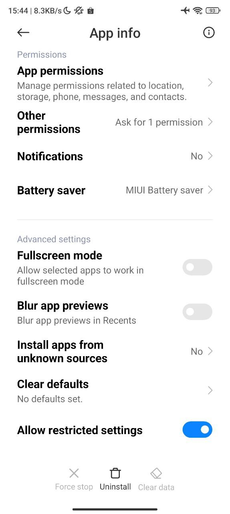
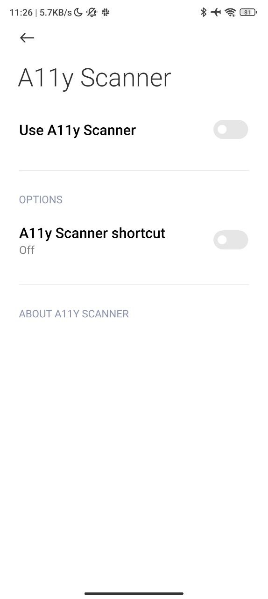
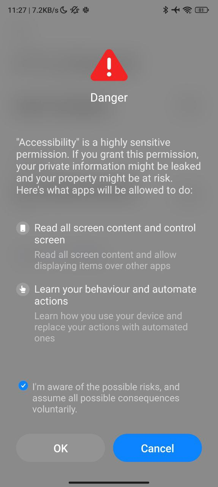
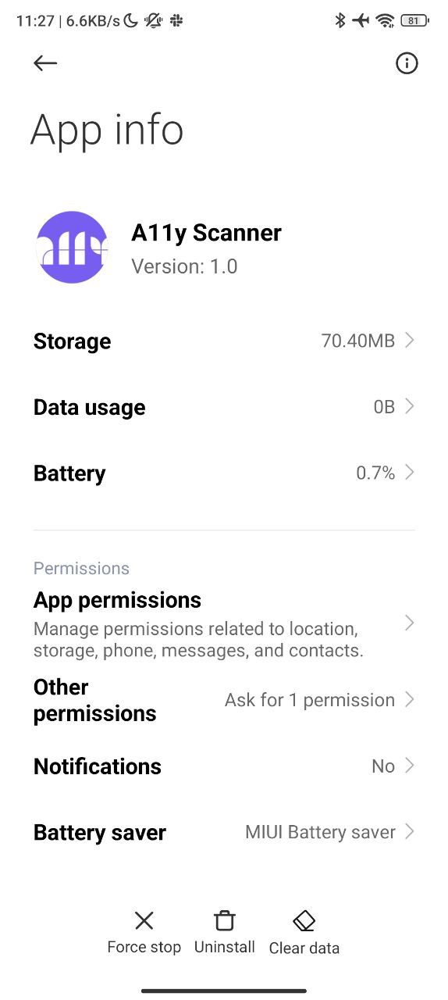
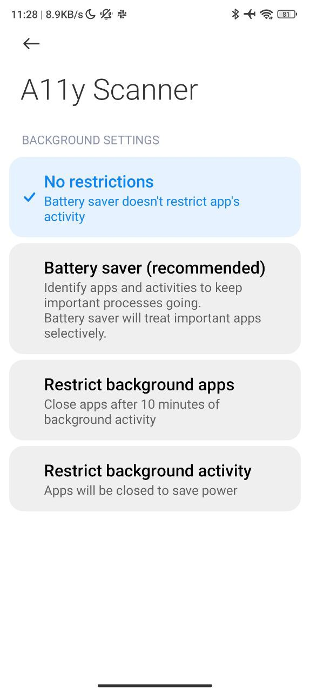

Step 1: Go to app info
Step 2: Tap on the 3 dots
Step 3: Enable "Allow restricted settings"
Step 4: You'll be asked for your passcode.
Step 5: Go to Settings > Additional settings > Accessibility > Vision
Step 6: Turn on A11y Scanner
Step 7: Accept the security prompt
Step 8: Go to app info. Turn off Battery Saver
 